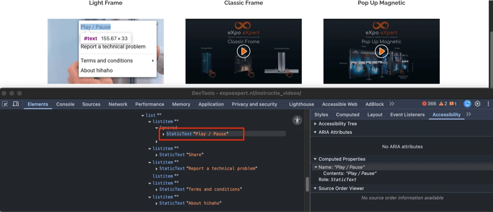
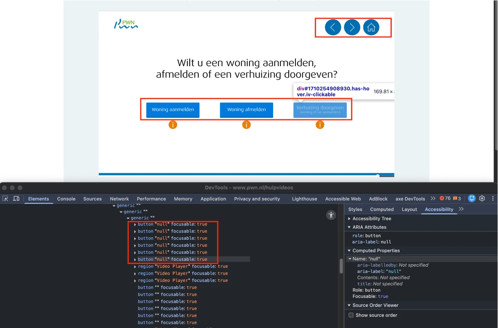
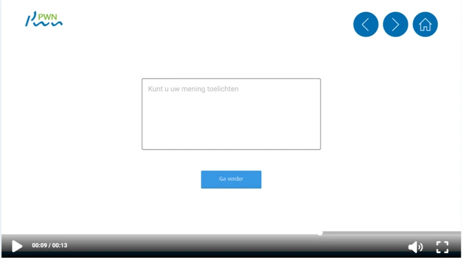
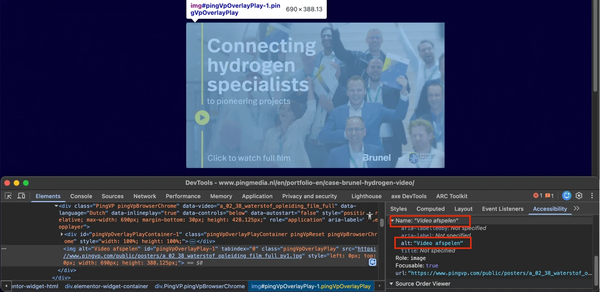
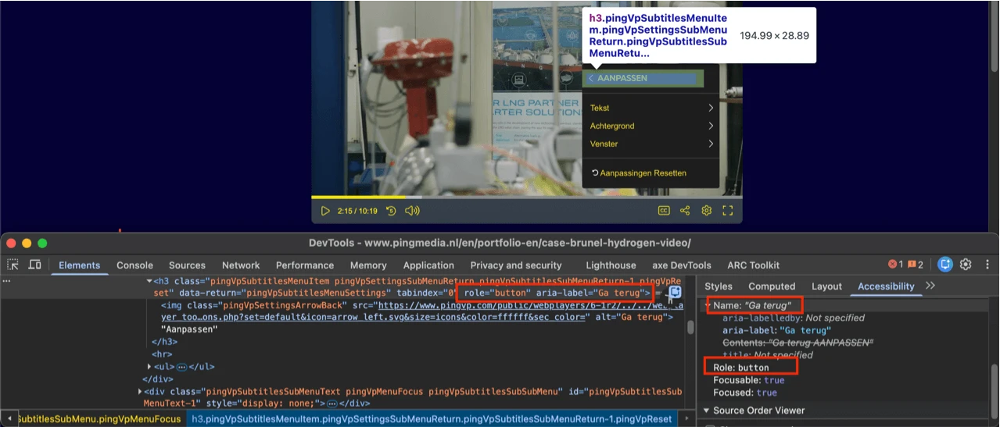
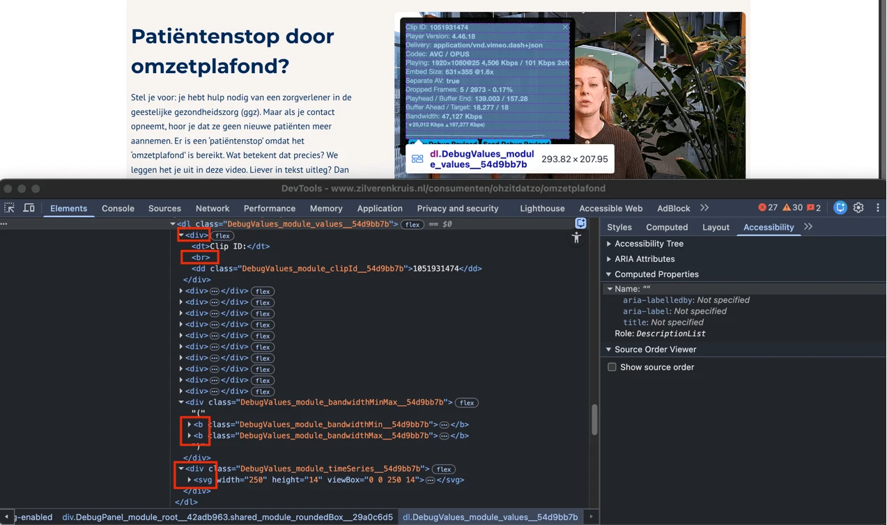
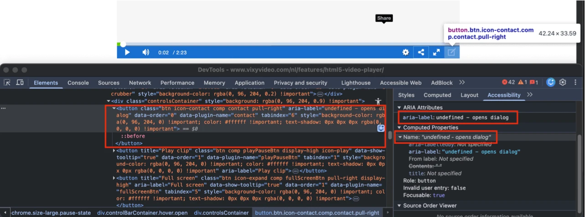
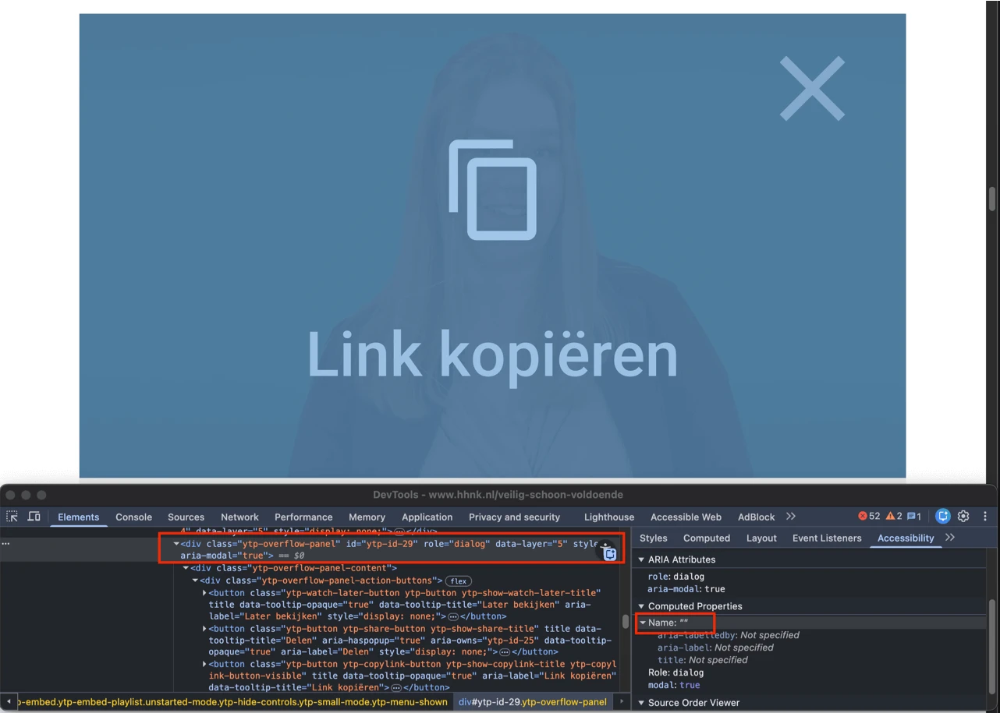

Audit digitale toegankelijkheid van videospelers, versie 2
Samenvatting
We hebben een quickscan digitale toegankelijkheid uitgevoerd op acht videospelers. Per videospeler hebben we 2 tot 3 uur onderzocht welke succescriteria van WCAG 2.2 niet werden behaald. Sommige videospelers bevatten interactieve content. Voor een onderzoeker is het lastig vast te stellen of onderdelen van deze content onderdeel zijn van de functionaliteit van de videospeler. Dit kan zijn dat sommige issues in dit rapport betrekking hebben op de inhoud waar de leverancier van de speler geen invloed op heeft of de implementatie van de speler.
Vanwege de beperkte beschikbare tijd hebben we per videospeler slechts een beperkt aantal issues vastgelegd.
#1 - Naam van de knop beschrijft niet wat de knop doet
Impact: KleinType: TechniekWCAG: 2.4.6EN: 9.2.4.6
In deze speler start de knop met het afspeelicoon de video. Wanneer deze wordt geactiveerd, verandert het icoon en de functie van de knop naar het pauzeren van de video. De toegankelijke naam van deze knop blijft echter hetzelfde: “Play or pause”. Deze toegankelijke naam beschrijft de functie niet nauwkeurig.
Een blinde bezoeker weet daardoor niet wat deze knop precies doet.
Dit probleem doet zich voor bij de dempknop en de knop voor volledig scherm.
#2 - Logo is een link, maar bestemming is onbekend
Het logo “eXpo eXpert” in deze speler, dat tevens een link is, heeft geen beschrijvende tekst voor de bestemming. Deze link heeft geen toegankelijke naam. Hierdoor is het voor bezoekers die hulpsoftware gebruiken lastig om te bepalen naar welke pagina of inhoud de link leidt.
Daarnaast is de zichtbare tekst in het logo niet opgenomen in de toegankelijke naam. Dit betekent dat de link niet correct werkt wanneer deze met spraakactivering wordt gebruikt. Het systeem herkent de link niet als de toegankelijke naam anders is dan de tekst die in het logo zichtbaar is.
#3 - De tijdlijn heeft niet de juiste rol en mist een toegankelijke naam
Impact: GrootType: TechniekWCAG: 4.1.2EN: 9.4.1.2
De tijdlijn van de video heeft niet de juiste rol en mist een toegankelijke naam. Zonder de juiste rol kunnen hulpsoftware deze bediening niet herkennen als een video-tijdlijn en geen betekenisvolle informatie geven over de functie ervan. Daarnaast betekent het ontbreken van een toegankelijke naam dat schermlezergebruikers niet kunnen bepalen wat de bediening voorstelt of hoe deze verband houdt met het afspelen van de video. Hierdoor kunnen gebruikers die afhankelijk zijn van hulpsoftware de tijdlijn niet goed begrijpen of bedienen.
#4 - De tijdlijn is niet toegankelijk met het toetsenbord
Impact: GrootType: TechniekWCAG: 2.1.1EN: 9.2.1.1
De tijdlijn van de video kan niet met het toetsenbord worden bediend. Bezoekers kunnen niet door de tijdlijn van de video navigeren met standaard schuifinteracties zoals de pijltjestoetsen of Page Up/Down. Dit voorkomt dat gebruikers die alleen het toetsenbord gebruiken of schermlezers gebruiken de video via de tijdlijn kunnen bedienen.
#5 - Knoppen hebben niet de juiste toegankelijke rol
Impact: GrootType: TechniekWCAG: 4.1.2EN: 9.4.1.2

In deze speler kan een contextmenu worden geopend met een rechtermuisklik. De knoppen in dit menu hebben niet de juiste toegankelijke rol.
Elk HTML-element heeft standaard een rol. Dit betekent dat het element bepaalde eigenschappen en functies heeft om informatie aan de bezoeker te geven of om informatie van de bezoeker te ontvangen. De rol bepaalt dus wat het element doet. Schermlezers en andere hulpmiddelen moeten de correcte rol van elk element op een webpagina kennen. Zo kunnen ze op een slimme manier met het element omgaan en aan de bezoeker uitleggen wat het element doet.
#6 - Melding dat de informatie is gekopieerd wordt niet als statusbericht voorgelezen
In deze speler kan een contextmenu worden geopend met een rechtermuisklik. De optie “Share” opent een dialoogvenster. In dit dialoogvenster klikt de bezoeker op “Copy” en verschijnt de melding "Copied" onder het invoerveld “Link (URL) to share”. Dit bericht wordt niet voorgelezen als een statusbericht.
Een schermlezer kan dit bericht alleen voorlezen aan een blinde bezoeker als het bericht in de code als statusbericht is gemarkeerd.
<label>-element is niet gekoppeld aan <select>-element
In deze speler kan een contextmenu worden geopend met een rechtermuisklik. De optie “Share” opent een dialoogvenster. In dit dialoogvenster is het <label>-element met de tekst "Video size" niet expliciet gekoppeld aan het bijbehorende <select>-element.
Het <label>-element moet gekoppeld zijn aan het bijbehorende select-element. Hierdoor krijgt het <select>-element een toegankelijke naam. Dit maakt het formulier toegankelijker. Omdat het <select>-element op dit moment geen toegankelijke naam heeft, wordt deze bevinding ook bij succescriterium 4.1.2 vermeld.
Dit probleem voldoet ook niet aan succescriterium 2.5.3. Gebruikers die afhankelijk zijn van spraakbediening geven opdrachten op basis van zichtbare tekst. Als die tekst (de initiële optie) geen onderdeel is van de toegankelijke naam, zullen spraakopdrachten niet werken.
#7 - Contrast tussen focusindicator en achtergrond is te laag
In deze speler kan een contextmenu worden geopend met een rechtermuisklik. De optie “Share” opent een dialoogvenster. Wanneer het <select>-element onder “Video size” toetsenbordfocus krijgt, is dit zichtbaar door een lichtblauwe toetsenbordfocusrand. De contrastratio tussen de toetsenbordfocusrand en de witte achtergrond is te laag: 1,2:1.
Momenteel is het voor mensen met een visuele beperking of kleurenblindheid lastig of zelfs onmogelijk om de focus te zien.
#8 - Dialoogvenster heeft geen toegankelijke naam
Impact: GrootType: TechniekWCAG: 4.1.2EN: 9.4.1.2
In deze speler kan een contextmenu worden geopend met een rechtermuisklik. De optie “Report a technical problem” opent een dialoogvenster. Dit dialoogvenster heeft geen toegankelijke naam.
Hulpsoftware kan hierdoor niet doorgeven welke inhoud het dialoogvenster heeft.
#9 - Onvoldoende kleurcontrast bij tekst die kleiner is dan 24px en niet vetgedrukt
In deze speler kan een contextmenu worden geopend met een rechtermuisklik. De optie “Report a technical problem” opent een dialoogvenster. In dit dialoogvenster staat een knop met witte tekst “Bevestigen” op een groene achtergrond (#29A96E). De contrastratio is te laag: 3,0:1.
Dit probleem doet zich voor bij de placeholder tekst in het invoerveld “Message”. De grijze tekst (#999999) op een witte achtergrond heeft een contrastratio van 2,8:1, wat lager is dan het vereiste minimum.
#10 - Instructie bij invoerveld is niet altijd zichtbaar
In deze speler kan een contextmenu worden geopend met een rechtermuisklik. De optie “Report a technical problem” opent een dialoogvenster. In dit dialoogvenster staat een invoerveld “Message” met een bijbehorende instructie als placeholder tekst: “Please describe the technical issue you are experiencing as clearly as possible. For substantive feedback, it is best to contact the author of the video”. Deze instructie is echter niet permanent zichtbaar; ze verdwijnt zodra de bezoeker begint te typen.
#11 - Taalwisseling ontbreekt op anderstalige content
Impact: MediumType: ContentWCAG: 3.1.2EN: 9.3.1.2
In deze speler kan een contextmenu worden geopend met een rechtermuisklik. De opties “Share” en “Report a technical problem” openen dialoogvensters. Deze dialoogvensters bevatten knoppen met teksten in een andere taal (Nederlands) zonder taalcode: “Annuleren”, “Bevestigen”. De instructie die bij de vorige bevinding is genoemd heeft ook geen taalswitch.
Deze tekst wordt nu voorgelezen volgens de uitspraakregels van de primaire taal. Die is ingesteld in het lang-attribuut op het html-element, in dit geval op “en”. De schermlezer zou juist op de taal van de zin moeten overschakelen. Dat bereik je door deze anderstalige inhoud een lokaal lang-attribuut te geven met de juiste waarde.
De videospeler wordt geladen via een iframe en bevat een eigen, zelfstandig HTML-document. Omdat dit een aparte pagina is, moet een standaardtaal worden opgegeven met het attribuut lang. Als dit ontbreekt, kunnen schermlezers de juiste uitspraakregels niet toepassen, wat zorgt voor een onjuiste of onduidelijke uitspraak van de interface van de speler. Het iframe-document moet een correct attribuut lang bevatten om aan de WCAG-eisen te voldoen.
#13 - De afspeelknop heeft geen correcte toegankelijke rol en mist een toegankelijke naam
Wanneer bezoekers een pagina met een videospeler openen, treffen zij een afspeelknop aan die uitsluitend uit een icoon bestaat en geen tekstalternatief heeft. Hierdoor ontbreekt een toegankelijke naam voor deze knop.
Als een knop alleen uit een afbeelding bestaat, moet de alternatieve tekst duidelijk beschrijven wat de functie van de knop is.
Doordat deze informatie ontbreekt, is het voor bezoekers die een schermlezer gebruiken niet duidelijk wat de functie van de knop is.
Deze afspeelknop heeft ook niet de juiste toegankelijke rol.
Elk HTML-element heeft standaard een rol. Dit betekent dat het element bepaalde eigenschappen en functies heeft om informatie aan de bezoeker te geven of om informatie van de bezoeker te ontvangen. De rol bepaalt dus wat het element doet. Schermlezers en andere hulpmiddelen moeten de correcte rol van elk element op een webpagina kennen. Zo kunnen ze op een slimme manier met het element omgaan en aan de bezoeker uitleggen wat het element doet.
#14 - Aangepaste focusindicator heeft onvoldoende kleurcontrast
Op de afspeelknop wordt een aangepaste toetsenbordfocusindicator gebruikt, zichtbaar als een groene cirkel (#0BD59B) rondom het afspeelicoon. De contrastratio tussen deze kleur en de achtergrond is onvoldoende. Omdat de achtergrond uit een afbeelding bestaat en de kleur kan variëren, wisselt ook de contrastratio, maar deze blijft te laag. Tegen een grijze achtergrond (#9FA1A5) is de contrastratio bijvoorbeeld 1,4:1. Het contrast van een aangepaste focusindicator moet minimaal 3,0:1 zijn.
Voor deze knop wordt dus niet de standaard focusindicator gebruikt, maar een aangepaste variant met een gekleurde rand, toegevoegd via CSS. Voor de standaard focusindicator gelden binnen WCAG geen contrasteisen; deze wordt daarom altijd goedgekeurd voor dit succescriterium. Bezoekers kunnen de standaard focusindicator namelijk zelf aanpassen aan hun eigen voorkeuren. Zodra de focusindicator echter met CSS wordt aangepast, is dat niet meer mogelijk en gelden de contrasteisen wél.
#15 - De tijdlijn heeft niet de juiste rol en mist een toegankelijke naam
Impact: GrootType: TechniekWCAG: 4.1.2EN: 9.4.1.2
De tijdlijn van de video heeft niet de juiste rol en mist een toegankelijke naam. Zonder de juiste rol kunnen hulpsoftware deze bediening niet herkennen als de tijdlijn van een video en geen duidelijke informatie geven over de functie ervan. Door het ontbreken van een toegankelijke naam kunnen schermlezergebruikers niet vaststellen waarvoor dit element dient of wat het doet met het afspelen van de video. Hierdoor kunnen gebruikers die afhankelijk zijn van hulpsoftware de tijdlijn niet goed begrijpen of bedienen.
#16 - De tijdlijn is niet toegankelijk met het toetsenbord
Impact: GrootType: TechniekWCAG: 2.1.1EN: 9.2.1.1
De tijdlijn van de video kan niet met het toetsenbord worden bediend. Bezoekers kunnen niet door de tijdlijn van de video navigeren met standaard pijltjestoetsen of Page Up/Down toetsen op hun toetsenbord. Hierdoor is het voor bezoekers die alleen het toetsenbord of een schermlezer gebruiken niet mogelijk om de video via de tijdlijn te bedienen.
#17 - Namen van de knoppen beschrijven niet wat de knoppen doen
Impact: GrootType: TechniekWCAG: 2.4.6EN: 9.2.4.6

In deze speler staan knoppen met teksten zoals "Start", "Intro overslaan", "Woning aanmelden", "Ja", "Nee", "Ga verder", met huis- en pijl-iconen, en andere. Deze knoppen hebben echter allemaal dezelfde toegankelijke naam: "null", wat de functie van de knoppen niet correct beschrijft. De toegankelijke namen komen van de attributen aria-label.
Een blinde bezoeker weet daardoor niet wat deze knoppen precies doen.
#18 - Zichtbare teksten ontbreken in de toegankelijke namen van de knoppen
Impact: GrootType: TechniekWCAG: 2.5.3EN: 9.2.5.3
In deze speler staan knoppen met tekst, zoals "Start", "Intro overslaan", "Woning aanmelden", "Ja", "Nee", "Ga verder" en andere. Deze knoppen hebben allemaal dezelfde toegankelijke naam: "null", afkomstig van de attributen aria-label.
Dit kan problemen geven voor bezoekers die stembediening gebruiken. Zij spreken een commando uit door de zichtbare tekst voor te lezen. Als deze niet voorkomt in de toegankelijke naam die in de code staat, werkt het commando niet.
#19 - Tekst van de knoppen heeft te weinig contrast
In deze speler staan knoppen met witte tekst op een blauwe achtergrond (#007ADC). De contrastratio is onvoldoende: 4,4:1, wat lager is dan de vereiste minimumwaarde van 4,5:1 voor standaardtekst.
Wanneer met de muis over deze knoppen wordt bewogen, staat de witte tekst op een groene achtergrond (#6AAF23). De contrastratio is dan ook te laag: 2,7:1.
In deze speler staan knoppen met “i”-iconen onder de tekst “Wilt u een woning aanmelden, afmelden of een verhuizing doorgeven?”. De “i”-iconen hebben geen tekstalternatief en de knop heeft geen toegankelijke naam.
Ditzelfde probleem komt voor bij de “x”-knoppen in de vensters die met deze knoppen worden geopend.
Hierdoor begrijpen bezoekers die een schermlezer gebruiken niet wat de bestemming of de functie is van de knoppen.
#21 - De toestand van het paneel met extra informatie wordt niet aangekondigd
Impact: GrootType: TechniekWCAG: 4.1.2EN: 9.4.1.2
De video in deze speler bevat knoppen met “i”-iconen onder de tekst “Wilt u een woning aanmelden, afmelden of een verhuizing doorgeven?”. Deze knoppen openen panelen met extra informatie. Hoewel de open of gesloten toestand visueel duidelijk is, wordt deze niet programmatisch aan schermlezers doorgegeven. Er wordt geen attribuut zoals aria-expanded gebruikt om de toestand aan te geven, waardoor schermlezergebruikers niet kunnen weten of het informatiepaneel op dat moment zichtbaar of verborgen is.
De video in deze speler bevat knoppen met “i”-iconen onder de tekst “Wilt u een woning aanmelden, afmelden of een verhuizing doorgeven?”. De witte “i”-iconen hebben onvoldoende kleurcontrast tegen de oranje achtergrond (#E87F06). De contrastratio van 2,8:1 is te laag.
Het icoon is dus niet voor iedereen zichtbaar. Zorg voor een minimaal contrast van 3,0:1.
In de video in deze speler, onder de tekst “Wilt u een woning aanmelden, afmelden of een verhuizing doorgeven?”, komt de toetsenbordfocus terecht op onzichtbare interactieve elementen na de knoppen met “i”-iconen.
De toetsenbordfocus mag niet terechtkomen op onzichtbare interactieve elementen (bijvoorbeeld links, knoppen, formuliervelden). Als dat wel gebeurt, kan een bezoeker ze onbedoeld activeren.
#24 - Volgorde toetsenbordfocus is niet logisch
Impact: GrootType: TechniekWCAG: 2.4.3EN: 9.2.4.3
In de video onder de tekst “Wilt u een woning aanmelden, afmelden of een verhuizing doorgeven?” openen de knoppen met “i”-iconen panelen met extra informatie. De toetsenbordfocus verplaatst zich niet naar de geopende panelen wanneer de knoppen worden geactiveerd. Deze volgorde van toetsenbordnavigatie is niet logisch.
Als bezoekers met het toetsenbord door de website navigeren, moeten interactieve elementen zoals knoppen en links op een logische volgorde toetsenbordfocus krijgen. Logisch betekent dat het aansluit op de volgorde die de elementen hebben in de visuele vormgeving. Anders kunnen bezoekers die alleen een toetsenbord gebruiken, minder makkelijk door de pagina navigeren. Het gaat dan bijvoorbeeld om mensen met een motorische of visuele beperking of een leesstoornis.
#25 - Alternatieve tekst van een informatieve afbeelding is leeg
In de video onder de tekst “Wilt u een woning aanmelden, afmelden of een verhuizing doorgeven?” openen de knoppen met “i”-iconen vensters met extra informatie. De inhoud van deze vensters bestaat uit afbeeldingen met tekst, maar deze informatieve afbeeldingen hebben lege alt-attributen.
Afbeeldingen die informatie overdragen moeten een tekstalternatief hebben. De alternatieve tekst mag dus niet leeg zijn. Hierdoor kan een schermlezer de informatie uit de afbeelding overbrengen aan een blinde bezoeker.
Als je een tekst als afbeelding plaatst, kunnen veel bezoekers er niets meer mee. Dit komt doordat ze de tekst in de afbeelding niet kunnen vergroten of aanpassen. Het is beter om deze tekst gewoon als normale tekst te plaatsen.
#26 - Onvoldoende kleurcontrast van placeholder-tekst
Impact: GrootType: TechniekWCAG: 1.4.3EN: 9.1.4.3

De video in deze speler bevat een tekstveld met de placeholder tekst “Kunt u uw mening toelichten”, die verschijnt nadat een optie is geselecteerd onder de tekst “Bent u tevreden over de inhoud van deze video?”. De grijze placeholder tekst (#B4B4B4) op een witte achtergrond heeft een contrastratio van 2,1:1, wat lager is dan de vereiste 4,5:1 voor standaardtekst.
#27 - Tekstveld heeft geen label of icoon
Impact: GrootType: TechniekWCAG: 3.3.2EN: 9.3.3.2
De video in deze speler bevat een tekstveld met de placeholder tekst “Kunt u uw mening toelichten”, die verschijnt nadat een optie is geselecteerd onder de tekst “Bent u tevreden over de inhoud van deze video?”, bijvoorbeeld “Nee”. Deze placeholder tekst wordt gebruikt als label en er is geen permanent, zichtbaar label aanwezig.
Invoervelden moeten een label hebben dat altijd zichtbaar is. Dat kan een tekst zijn of een afbeelding (icoon). Een placeholder tekst kan niet als label dienen, omdat deze tekst verdwijnt als de bezoeker begint te typen. Een invoerveld zonder zichtbaar label kan mensen in de war brengen, omdat ze niet weten wat ze moeten invullen.
#28 - De pop-up kan niet worden geopend met het toetsenbord
In de videospelers kan een pop-up met een link “Ivory video player” worden geopend met een rechtermuisklik. Deze pop-up is echter niet bedienbaar met het toetsenbord. Hierdoor hebben gebruikers die alleen het toetsenbord gebruiken geen toegang tot de functionaliteit in deze pop-up. Alle functionaliteit moet met het toetsenbord bedienbaar zijn.
#29 - Toegankelijke namen zijn in het Nederlands geschreven
Impact: GrootType: ContentWCAG: 3.1.2EN: 9.3.1.2

De hoofdtaal van de pagina is Engels (lang="en-GB"), maar de alt-tekst van de voorbeeldafbeelding van de speler met het afspeelicoon is in het Nederlands: “Video afspelen”.
Hetzelfde probleem komt voor bij interactieve elementen wanneer deze speler wordt geactiveerd. De bedieningsknoppen van de speler bevatten aria-label-attributen met tekst in het Nederlands, zoals “Video afspelen/Video pauzeren”, “5 seconden terug”, “Geluid uit” en andere.
Deze teksten worden voorgelezen door schermlezers, volgens de uitspraakregels van de primaire taal van de pagina (in dit geval Engels).
#30 - Knop heeft niet de juiste toegankelijke rol
Impact: GrootType: TechniekWCAG: 4.1.2EN: 9.4.1.2
Voordat de speler wordt geactiveerd, is er een voorbeeldafbeelding met een afspeelknop. Deze knop heeft niet de juiste toegankelijke rol.
Elk HTML-element heeft standaard een rol. Dit betekent dat het element bepaalde eigenschappen en functies heeft om informatie aan de bezoeker te geven of om informatie van de bezoeker te ontvangen. De rol bepaalt dus wat het element doet. Schermlezers en andere hulpmiddelen moeten de correcte rol van elk element op een webpagina kennen. Zo kunnen ze op een slimme manier met het element omgaan en aan de bezoeker uitleggen wat het element doet.
#31 - Element met het role="slider" mist een verplicht attribuut
Deze speler bevat een element met de rol "slider", maar het verplichte ARIA-attribuut aria-valuenow ontbreekt. Hierdoor kan hulpsoftware de huidige waarde van de slider niet bepalen.
#32 - Onderliggend element heeft niet de juiste rol
In deze speler staan knoppen die menu’s openen, zoals ondertiteling. De pop-up elementen zijn gemarkeerd met de role="menu". De ARIA-structuur van het menu is echter onjuist.
Elementen met de role="menu" bevatten kind-elementen die volgens de ARIA-specificatie niet zijn toegestaan, zoals h2- en ul-elementen. Een menu mag alleen elementen bevatten met geschikte menurollen, zoals role="menuitem". Hierdoor wordt het ARIA-menu patroon doorbroken, omdat menu-items een aan menu gerelateerde rol moeten hebben. Als gevolg daarvan kunnen hulpsoftware het menu en de items niet correct herkennen of bedienen.
Binnen de elementen met de role="menu" worden bovendien ul-elementen gebruikt met li-elementen die de role="button" hebben. Deze rol overschrijft de standaardrol van lijstitems, waardoor ook de lijststructuur onjuist is.
#33 - Zichtbare tekst ontbreekt in toegankelijke naam knop
Impact: GrootType: TechniekWCAG: 2.5.3EN: 9.2.5.3

In deze speler zijn er knoppen die menu’s openen, zoals ondertiteling. In deze menu’s staan items die submenus openen, bijvoorbeeld de knop “Aanpassen” in het ondertitelingsmenu opent het submenu “Aanpassen”. In de submenus staan knoppen waarmee teruggekeerd kan worden naar het hoofdmenu. Deze knoppen hebben zichtbare tekst die niet is opgenomen in hun toegankelijke naam. In het submenu “Aanpassen” heeft de knop met de zichtbare tekst “AANPASSEN” bijvoorbeeld de toegankelijke naam “Ga terug”, afkomstig van het attribuut aria-label.
Dit kan problemen geven voor bezoekers die stembediening gebruiken. Zij spreken een commando uit door de zichtbare tekst voor te lezen. Als deze niet voorkomt in de toegankelijke naam die in de code staat, werkt het commando niet.
Hetzelfde probleem komt voor bij andere knoppen in de menu’s en submenus.
#34 - Kop is niet gemarkeerd als koptekst
Impact: MediumType: ContentWCAG: 1.3.1EN: 9.1.3.1
In deze speler zijn teksten die visueel functioneren als koppen gemarkeerd als koppen, maar hun semantische rol wordt overschreven door het ARIA-attribuut role="button". Hierdoor herkent hulpsoftware deze elementen niet als koppen. In het menu voor ondertiteling (“ONDERTITELING”) opent de knop “Aanpassen” een submenu. In dit submenu functioneert de tekst “Aanpassen” visueel als een kop, maar de koprol wordt overschreven door role="button".
Voor bezoekers die hulpsoftware gebruiken heeft een (tussen)kop die er wel uitziet als kop, maar niet als zodanig is gemarkeerd, geen toegevoegde waarde.. Gebruikers van hulpsoftware kunnen via koppen de inhoud van een pagina scannen of snel naar een specifieke sectie navigeren. Dit is echter alleen mogelijk wanneerkoppen correct in de code zijn opgenomen.
Wanneer koppen uitsluitend visueel als kop zijn vormgegeven (bijvoorbeeld door vetgedrukt tekst), ontstaat bovendien een discrepantie tussen de visuele structuur en de structuur in de code. Hierdoor is de informatiehiërarchie voor hulpsoftware niet correct beschikbaar.
#35 - De geselecteerde optie van de menu-items wordt niet gecommuniceerd aan schermlezers
De instellingenknop in deze speler opent een menu met knoppen die visueel aangeven welke optie is geselecteerd, bijvoorbeeld de knop “Kwaliteit” toont de geselecteerde waarde “HD”. Deze informatie wordt niet overgebracht aan gebruikers van hulpsoftware. Hoewel de geselecteerde waarde als zichtbare tekst aanwezig is binnen het element met de role=“button”, wordt deze overschreven door een aria-label, waardoor hulpsoftware de huidige selectie niet aankondigt.
#36 - Dialoogvenster heeft niet de juiste rol en geen toegankelijke naam
Impact: GrootType: TechniekWCAG: 4.1.2EN: 9.4.1.2
In deze speler is er een knop die een dialoogvenster met deelopties opent. Dit dialoogvenster heeft geen juiste rol en geen toegankelijke naam.
Schermlezers kunnen hierdoor niet doorgeven dat het om een dialoogvenster gaat, en wat de inhoud ervan is.
Hetzelfde probleem komt voor bij het dialoogvenster “Toetsenbord sneltoetsen”.
#37 - Volgorde toetsenbordfocus is niet logisch
Impact: GrootType: TechniekWCAG: 2.4.3EN: 9.2.4.3
In deze speler opent de knop “Contextmenu” in het instellingenmenu een dialoogvenster. Wanneer de knoppen “Ga naar start”, “Ga een stap terug” en “Herhaal video” worden geactiveerd, verplaatst de toetsenbordfocus naar het eerste element op de pagina, en dat is de link “033 4621 390” in de header. Deze volgorde van toetsenbordnavigatie is niet logisch.
Als bezoekers met het toetsenbord door de website navigeren, moeten interactieve elementen zoals knoppen en links op een logische volgorde toetsenbordfocus krijgen. Logisch betekent dat het aansluit op de volgorde die de elementen hebben in de visuele vormgeving. Anders kunnen bezoekers die alleen een toetsenbord gebruiken, minder makkelijk door de pagina navigeren. Het gaat dan bijvoorbeeld om mensen met een motorische of visuele beperking of een leesstoornis.
#38 - Onvoldoende kleurcontrast bij tekst die kleiner is dan 24px en niet vetgedrukt
In deze speler opent de knop “Aanpassen” in het menu voor ondertiteling (“ONDERTITELING”) het submenu. De opties in dit submenu openen extra submenus met instellingen voor “Transparantie”. De lichtgrijze tekst “50%” (#EEEEEE) op de grijze achtergrond (#8F8F8F) heeft een te lage contrastratio van 2,8:1.
Wanneer de opties “75%” en “100%” toetsenbordfocus krijgen, is de tekst zwart (#000000) op een donkergroene achtergrond (#1D2B32). De contrastratio is dan 1,4:1. Dit moet minimaal 4,5:1 zijn.
#39 - Bezoekers die inzoomen tot 400% kunnen niet meer alle functies gebruiken
Wanneer de pagina wordt bekeken met een schermresolutie van 1280 bij 1024 pixels en ingezoomd tot 400%, worden de menu’s “ONDERTITELING” en “INSTELLINGEN” afgekapt en zijn niet alle interactieve elementen zichtbaar.
In deze speler kan een contextmenu worden geopend met een rechtermuisklik. Dit menu is echter niet bedienbaar met het toetsenbord. Hierdoor hebben gebruikers die alleen het toetsenbord gebruiken geen toegang tot de functionaliteit in dit menu. Alle functionaliteit moet met het toetsenbord bedienbaar zijn.
#41 - Element dl bevat andere elementen dan dt en dd
Impact: MediumType: ContentWCAG: 1.3.1EN: 9.1.3.1

In deze speler kan een contextmenu worden geopend met een rechtermuisklik. In dit menu opent het item “Open debug panel” een paneel. In dit paneel bevat een definitielijst (dl) elementen die geen dt (definitieterm) of dd (definitiebeschrijving) zijn.
Schermlezers vertrouwen op de juiste structuur van definitielijsten om deze correct aan te kondigen. Wanneer een dl ongeldig of onverwacht elementen bevat, kunnen schermlezers de informatie onjuist of verwarrend aankondigen, waardoor de inhoud moeilijker te begrijpen is voor blinde of slechtziende gebruikers.
#42 - Submenu krijgt niet direct toetsenbordfocus
Impact: GrootType: TechniekWCAG: 2.4.3EN: 9.2.4.3
Wanneer de pagina’s worden ingezoomd (bij een schermresolutie van 1280 bij 1024 pixels en een zoom van 400%) verschijnt er in deze speler een knop met een pijl. Deze knop toont een paneel met bedienings-elementen van de speler. De toetsenbordfocus verplaatst zich echter naar andere elementen op de pagina. Dit is geen logische focusvolgorde. Wanneer inhoud wordt weergegeven, moet de toetsenbordfocus direct naar het geopende paneel gaan, zodat gebruikers van toetsenbord en schermlezer meteen toegang hebben tot de bedieningselementen.
#43 - Melding dat de informatie is gekopieerd wordt niet voorgelezen
In deze speler kan een contextmenu worden geopend met een rechtermuisklik. Wanneer de optie “Copy debug info” wordt aangeklikt, verschijnt de melding "Copied debug info", maar de focus wordt niet naar deze melding verplaatst.
Een schermlezer kan dit bericht alleen voorlezen aan een blinde bezoeker als het bericht in de code als statusbericht is gemarkeerd.
In deze speler komt de toetsenbordfocus terecht op een onzichtbare link na de interactieve elementen in de bedieningsbalk van de video.
De toetsenbordfocus mag echter niet terechtkomen op onzichtbare interactieve elementen . Als dat wel gebeurt, kan een bezoeker deze onbedoeld activeren.
#45 - Link heeft geen tekst, waardoor linkdoel onbekend is
In deze speler mist een onzichtbare link bovenaan inhoud en heeft daardoor geen herkenbaar linkdoel. Dit voldoet ook niet aan succescriterium 4.1.2, omdat deze link geen toegankelijke naam heeft.
Een blinde bezoeker weet daardoor niet wat de bestemming van de link is.
#46 - Naam van de knop beschrijft niet wat de knop doet
Impact: GrootType: TechniekWCAG: 2.4.6EN: 9.2.4.6

In deze speler heeft de knop met het potloodicoon de toegankelijke naam "undefined - opens dialog", wat de functie van de knop niet correct beschrijft.
Een blinde bezoeker weet daardoor niet wat deze knop precies doet.
#47 - Staat van menu niet doorgegeven aan schermlezer
Impact: GrootType: TechniekWCAG: 4.1.2EN: 9.4.1.2
In deze speler opent de instellingenknop een menu met videoresolutie-opties, maar een blinde bezoeker krijgt geen informatie over of het menu geopend of gesloten is.
Als er een link is die een submenu kan tonen of verbergen, dan moet hulpsoftware de staat van dat submenu (zichtbaar of verborgen) kunnen bepalen.
#48 - Toetsenbordfocus komt niet in het menu terecht
Impact: GrootType: TechniekWCAG: 2.4.3EN: 9.2.4.3
In deze speler opent de instellingenknop een menu met videoresolutie-opties. Wanneer het menu wordt geopend, komt de toetsenbordfocus niet in dit menu terecht.
#49 - Onvoldoende kleurcontrast bij tekst die kleiner is dan 24px en niet vetgedrukt
In deze speler opent de instellingenknop een menu met videoresolutie-opties. De items in het menu die niet zijn geselecteerd (bijvoorbeeld “1080p”) hebben een grijze kleur (#A6A6A6) op de donkergrijze transparante achtergrond. De contrastratio is te laag: 4,4:1.
Dit probleem doet zich voor in het dialoogvenster dat wordt geopend met de knop met het deel-icoon. Dit dialoogvenster bevat grijze teksten (#ACABAC), zoals invoerveldwaarden en “Start video at”, op de donkergrijze achtergrond (#585558). De contrastratio is te laag: 3,2:1.
#50 - Dialoogvenster heeft geen toegankelijke naam
Impact: GrootType: TechniekWCAG: 4.1.2EN: 9.4.1.2
In deze speler opent de knop met het deel-icoon een dialoogvenster. Dit dialoogvenster heeft geen toegankelijke naam.
Hulpsoftware kan hierdoor niet doorgeven welke inhoud het dialoogvenster heeft.
Dit probleem doet zich voor bij het dialoogvenster “Toe aan de volgende stap in uw videocontentstrategie?” dat wordt geopend via de link “Get in touch!”.
#51 - Afbeeldingen zonder tekstalternatief zijn de enige inhoud van de links
In deze speler opent de knop met het deel-icoon een dialoogvenster. Dit dialoogvenster bevat sociale media-iconen die als links functioneren, maar de tekstalternatieven ontbreken, waardoor de links niet toegankelijk zijn.
De afbeeldingen zijn dus interactief. Er is geen tekstalternatief. Daardoor heeft de link geen inhoud (dit zorgt voor afkeur op succescriterium 2.4.4 en 4.1.2).
#52 - Invoervelden hebben geen toegankelijke namen
Impact: GrootType: TechniekWCAG: 4.1.2EN: 9.4.1.2
In deze speler opent de knop met het deel-icoon een dialoogvenster. Dit dialoogvenster bevat invoervelden die geen toegankelijke naam hebben.
Hierdoor is het voor blinde of slechtziende bezoekers die een schermlezer gebruiken niet duidelijk wat zij in moeten vullen.
#53 - De kleur van de rand van het invoervelden heeft niet genoeg contrast
In deze speler opent de knop met het deel-icoon een dialoogvenster. Dit dialoogvenster bevat invoervelden. De contrastratio tussen de grijze rand (#ACABAC) en de donkergrijze achtergrond (#615F61) is 2,8:1.
#54 - Blinde bezoekers krijgen geen bericht van de foutmelding
In deze speler opent de knop met het deel-icoon een dialoogvenster. Dit dialoogvenster bevat invoervelden. Als er fouten worden gemaakt in het invoerveld “Start video at”, verschijnt de foutmelding: “Time offset cannot be longer than movie duration.”. De focus wordt echter niet naar deze melding verplaatst en de schermlezer kondigt deze melding niet aan.
Als de foutmelding geen toetsenbordfocus krijgt op het moment dat deze verschijnt, krijgen mensen die blind zijn geen melding van hun schermlezer.
#55 - Placeholder tekst wordt gebruikt als label voor een invoerveld
Het dialoogvenster “Toe aan de volgende stap in uw videocontentstrategie?” dat wordt geopend wordt via de link “Get in touch!” bevat een formulier met invoervelden met placeholder teksten “Naam”, “E-mail”, “Organisatie” en “Telefoonnummer”. Deze invoervelden hebben echter geen permanente labels; de placeholder tekst wordt als label gebruikt.
Invoervelden moeten een label hebben dat altijd zichtbaar is. Je kunt hier dus niet een placeholder-tekst voor gebruiken, want die verdwijnt zodra de bezoeker begint te typen.
#56 - Invoervelden voor persoonlijke gegevens hebben geen autocomplete-attribuut
In het dialoogvenster “Toe aan de volgende stap in uw videocontentstrategie?” dat wordt geopend via de link “Get in touch!” ontbreekt bij het formulier met invoervelden voor persoonlijke informatie (bijvoorbeeld naam, e-mailadres, telefoonnummer) het attribuut autocomplete.
Invoervelden voor persoonlijke informatie, zoals achternaam, e-mailadres of telefoonnummer, moeten het autocomplete-attribuut hebben. Hierdoor kunnen browsers en hulpsoftware helpen bij het invoeren, bijvoorbeeld door de velden automatisch in te vullen.
#57 - Het kleurcontrast van de aanduiding voor verplichte velden is niet voldoende
In het dialoogvenster “Toe aan de volgende stap in uw videocontentstrategie?” dat wordt geopend via de link “Get in touch!” bevat het formulier invoervelden met een rood sterretje (#FF0000). Tegen de blauwe achtergrond (#2F3F84) is de contrastratio te laag: 2,4:1.
#58 - Onvoldoende kleurcontrast bij tekst die kleiner is dan 24px en niet vetgedrukt
In het dialoogvenster “Toe aan de volgende stap in uw videocontentstrategie?” dat wordt geopend via de link “Get in touch!” bevat het formulier een knop met witte tekst “Verstuur” op een groene achtergrond (#68CC00). De contrastratio is te laag: 2,1:1.
Dit probleem doet zich voor bij de invoervelden met door bezoekers ingevoerde tekst nadat het formulier is verzonden met fouten of lege verplichte velden. De rode tekst (#FF0000) op een witte achtergrond heeft een contrastratio van 4,0:1.
#59 - De knop heeft geen toegankelijke naam en geen correcte rol
In het dialoogvenster “Toe aan de volgende stap in uw videocontentstrategie?” dat wordt geopend via de link “Get in touch!” functioneert het “X”-icoon als knop om het dialoogvenster te sluiten. Dit icoon heeft echter geen tekstalternatief. Daardoor heeft de knop geen toegankelijke naam die de functie correct beschrijft. Wanneer een knop uitsluitend uit een afbeelding bestaat, moet de alternatieve tekst van de afbeelding de functie van de knop aangeven.
Deze knop heeft ook niet de juiste toegankelijke rol. Elk HTML-element heeft standaard een rol. Dit betekent dat het element bepaalde eigenschappen en functies heeft om informatie aan de bezoeker te geven of om informatie van de bezoeker te ontvangen. De rol bepaalt dus wat het element doet. Schermlezers en andere hulpmiddelen moeten de correcte rol van elk element op een webpagina kennen. Zo kunnen ze op een slimme manier met het element omgaan en aan de bezoeker uitleggen wat het element doet.
#60 - Knop is niet met het toetsenbord te bedienen
Impact: GrootType: TechniekWCAG: 2.1.1EN: 9.2.1.1
In het dialoogvenster “Toe aan de volgende stap in uw videocontentstrategie?” dat wordt geopend via de link “Get in touch!” is de “X”-knop niet toegankelijk met het toetsenbord.
Je kunt deze knop niet met het toetsenbord activeren. Zorg dat alle knoppen ook met de Enter-, Return- of spatietoetsen kunnen worden bediend.
#61 - Fouten worden alleen visueel aangegeven
Impact: GroetType: TechniekWCAG: 3.3.1EN: 9.3.3.1
In het dialoogvenster “Toe aan de volgende stap in uw videocontentstrategie?” dat wordt geopend via de link “Get in touch!” staat een formulier. In dit formulier worden invoerfouten alleen visueel aangegeven, bijvoorbeeld door de onderrand van het veld rood te kleuren. Er wordt geen tekstuele foutmelding gegeven die uitlegt wat er misging of hoe dit kan worden opgelost.
Omdat de fout niet in tekst wordt beschreven, ontvangen bezoekers die hulpsoftware gebruiken, zoals schermlezers, geen informatie over de fout. Hierdoor is het voor hen onmogelijk te begrijpen waarom het verzenden mislukt of wat moet worden gecorrigeerd. De fouten moeten in tekst worden aangegeven, niet alleen visueel, zodat alle gebruikers ze kunnen waarnemen en begrijpen.
#62 - Bezoekers die inzoomen tot 400% kunnen niet meer alle functies gebruiken
Wanneer deze pagina wordt bekeken met een schermresolutie van 1280 bij 1024 pixels en ingezoomd tot 400%, is de knop met het deel-icoon die een dialoogvenster met deelopties opent, niet zichtbaar en niet bedienbaar.
Daarnaast overlapt in het dialoogvenster “Toe aan de volgende stap in uw videocontentstrategie?” dat wordt geopend via de link “Get in touch!”, de “X”-knop de tekst.
#63 - Taalwisseling ontbreekt op anderstalige content
Impact: MediumType: ContentWCAG: 3.1.2EN: 9.3.1.2
In het dialoogvenster “Toe aan de volgende stap in uw videocontentstrategie?” dat wordt geopend via de link “Get in touch!” staan teksten in een andere taal (Nederlands) zonder taalcode.
Deze tekst wordt nu voorgelezen volgens de uitspraakregels van de primaire taal. Die is ingesteld in het lang-attribuut op het html-element, in dit geval op “en”. De schermlezer zou juist op de taal van de zin moeten overschakelen. Dat bereik je door deze anderstalige inhoud een lokaal lang-attribuut te geven met de juiste waarde.
Er wordt een aangepaste toetsenbordfocusindicator gebruikt op de interactieve elementen van deze speler. Deze is zichtbaar als een blauwe rand (`#1D78AC`) op een achtergrond met wisselende kleuren. Bij de knop ‘Link kopiëren’ is de contrastratio tussen de blauwe focusrand en de donkergroene achtergrond (`#10332F`) 2,8:1 wanneer de knop toetsenbordfocus krijgt.
In de speler wordt niet de standaard focusindicator gebruikt, maar een aangepaste variant met een gekleurde rand, toegevoegd via CSS. Voor de standaard focusindicator gelden binnen WCAG geen contrasteisen; deze wordt daarom altijd goedgekeurd voor dit succescriterium. Bezoekers kunnen de standaard focusindicator namelijk zelf aanpassen aan hun eigen voorkeuren. Zodra de focusindicator echter met CSS is aangepast, is dat niet meer mogelijk en gelden de contrasteisen wél.
In deze speler verschijnt na het klikken op de knop “Link kopiëren” de melding "Link naar klembord gekopieerd". Dit is een statusmelding en de focus wordt niet naar deze melding verplaatst. Daardoor is deze melding op het moment dat deze verschijnt niet toegankelijk voor blinde gebruikers.
Een schermlezer kan dit bericht alleen voorlezen aan een blinde bezoeker als het bericht in de code als statusbericht is gemarkeerd.
#66 - Functie van knop verandert, maar de toegankelijke naam verandert niet mee
In deze speler toont de Pauze knop een pauze-icoon zodra de video start. Wanneer de gebruiker deze knop activeert, verandert het icoon om de functie “afspelen” aan te geven, en start de knop vervolgens de video. De toegankelijke naam wordt echter niet aangepast en blijft “Pauzeren sneltoets k”.
Dit is onjuist. Wanneer een knop uitsluitend uit een icoon bestaat, moet de toegankelijke naam de huidige functie van de knop duidelijk maken. Als de functie van de knop verandert van pauzeren naar afspelen, moet de toegankelijke naam ook aangepast worden, zodat gebruikers van hulpsoftware begrijpen wat de knop doet wanneer deze wordt geactiveerd.
#67 - Koppen zijn niet gemarkeerd als kopteksten
Impact: MediumType: ContentWCAG: 1.3.1EN: 9.1.3.1
In deze speler opent de instellingenknop een menu. In dit menu openen de menu-items submenu’s. In deze submenu’s staan teksten die niet zijn gemarkeerd als koppen. Bijvoorbeeld de tekst “Ondertiteling” in het submenu dat wordt geopend via het menu-item “Ondertiteling”.
Bezoekers die hulpsoftware gebruiken hebben niets aan een (tussen)kop die er wel uitziet als kop, maar niet als kop is gemarkeerd. Via de koppen op een pagina kunnen gebruikers van hulpsoftware de inhoud scannen of snel naar een bepaalde sectie springen. Maar dat kan alleen als de kop ook echt in de code staat. Als koppen alleen visueel als kop zijn vormgegeven (bijvoorbeeld vetgedrukt), ontstaat bovendien nog een ander probleem: de structuur van de informatie in de code wijkt dan af van de visuele structuur.
#68 - Toetsenbordfocus komt niet op een logische plek nadat submenu is gesloten
Impact: GrootType: TechniekWCAG: 2.4.3EN: 9.2.4.3
In deze speler opent de instellingenknop een menu. In dit menu staan menu-items die submenu’s openen. Na het sluiten van een submenu keert de toetsenbordfocus niet terug naar het activerende menu-item of het volgende logische element in het menu. In plaats daarvan verplaatst de focus zich naar de eerste menuoptie.
In deze speler opent de instellingenknop een menu. Binnen dit menu staat het onderdeel ‘Afspeelsnelheid’, dat een submenu opent. Wanneer een bezoeker dit submenu met het toetsenbord navigeert en de focus op de schuifregelaar ‘Aangepast’ terechtkomt, blijft de toetsenbordfocus vaststaan. Het is dan niet meer mogelijk om met alleen het toetsenbord naar andere interactieve elementen te navigeren.
Door deze toetsenbordval kunnen bezoekers die uitsluitend een toetsenbord gebruiken niet meer vrij over de pagina bewegen. Dit treft onder andere mensen met een motorische of visuele beperking en maakt de website minder bruikbaar en minder toegankelijk.
#70 - Slider-element heeft geen toegankelijke naam
Impact: GrootType: TechniekWCAG: 4.1.2EN: 9.4.1.2
In deze speler opent de instellingenknop een menu. In dit menu staat het menu-item “Afspeelsnelheid”, dat een submenu opent. In dit submenu staat een schuifregelaar onder “Aangepast”, maar deze schuifregelaar heeft geen toegankelijke naam.
Daardoor kunnen schermlezergebruikers niet bepalen wat het doel van dit element is of begrijpen wat er verandert wanneer het wordt aangepast.
#71 - Dialoogvenster heeft geen toegankelijke naam
Impact: GrootType: TechniekWCAG: 4.1.2EN: 9.4.1.2

Wanneer de player wordt bekeken met een schermresolutie van 1280 bij 1024 pixels en wordt ingezoomd tot 400%, opent de knop met drie stippen in deze speler een dialoogvenster. Dit dialoogvenster heeft geen toegankelijke naam.
Hulpsoftware kan hierdoor niet doorgeven welke inhoud het dialoogvenster heeft.
#72 - Bezoekers die inzoomen tot 400% kunnen niet meer alle functies gebruiken
Wanneer de pagina’s worden bekeken met een schermresolutie van 1280 bij 1024 pixels en worden ingezoomd tot 400%, zijn de volgende interactieve elementen in deze speler niet zichtbaar en niet bedienbaar: volumeknop en volumeschuifregelaar, ondertitelingsknop en instellingenknop.
Alles moet nog steeds correct werken wanneer wordt ingezoomd tot 400% op een scherm met een resolutie van 1280 bij 1024 pixels.
In deze speler kan een contextmenu worden geopend met een rechtermuisklik. Dit menu is echter niet bedienbaar met het toetsenbord. Hierdoor hebben gebruikers die alleen het toetsenbord gebruiken geen toegang tot de functionaliteit in dit menu. Alle functionaliteit moet met het toetsenbord bedienbaar zijn.
Over dit onderzoek
Leeswijzer
Onze rapporten zijn anders. Bij het bespreken van de gevonden problemen volgen wij niet de structuur van de norm, maar die van jouw website of app. Hierdoor kun je gewoon per pagina of scherm aan de slag gaan. Wel zo makkelijk! Je vindt verderop een overzicht van alle pagina’s met problemen.
We geven je bij elk gevonden issue een paar voorbeelden, maar niet een complete lijst. Controleer zelf of het probleem ook nog op andere plekken voorkomt. Zie het rapport als een leidraad.
Gebruikte norm
Dit onderzoek laat zien in hoeverre de website op dit moment voldoet aan WCAG 2.2, niveau A en AA. WCAG staat voor Web Content Accessibility Guidelines. Dit is de internationale norm voor digitale toegankelijkheid. De Europese norm EN 301 549 bevat alle eisen van WCAG op niveau A en AA.
In dit rapport hebben we korte beschrijvingen van de succescriteria uit de norm opgenomen, met een algemene uitleg erbij. Wil je ze helemaal lezen? Bekijk dan de documentatie van WCAG.
Gebruikte onderzoeksmethode
We gebruiken de onderzoeksmethode WCAG-EM van het W3C. Het proces ziet er als volgt uit:
vaststellen wat binnen en buiten scope valt
vaststellen welke technologieën zijn gebruikt
steekproef (sample) samenstellen
steekproef onderzoeken
gevonden issues beschrijven
Het grootste deel van het onderzoek doen we met de hand. Voor een deel van de toegankelijkheidseisen gebruiken we automatische tools als ondersteuning, zoals axe-core en Chrome Developer Tools.
Belangrijk om te weten
Dit rapport helpt je om de toegankelijkheid van je website te verbeteren. Maar let op: het is geen definitieve, volledige lijst van alle aanwezige toegankelijkheidsproblemen. Dat zit zo:
Het is een steekproef
Ten eerste is het onderzoek gebaseerd op een steekproef. Die is op een betrouwbare manier genomen, en de meeste problemen zullen daardoor zeker aan het licht komen. Toch kan een probleem net buiten de steekproef vallen. Bij een volgend onderzoek kan het wel ontdekt worden.
Op basis van falsificatie
We beoordelen vanuit het principe van falsificatie. Dat houdt in dat we proberen te bewijzen dat iets niet waar is, in plaats van te bevestigen dat het klopt. ‘Voldoet’ betekent daarom dat we geen reden hebben gevonden om een punt af te keuren. Maar als we later wél een reden vinden, kan het alsnog worden afgekeurd.
Voortschrijdend inzicht
Het komt voor dat de beoordeling van een succescriterium op detailniveau verandert. De norm beschrijft namelijk niet élk mogelijk scenario. Samen met andere onderzoeksbureaus overleggen we hoe we met bepaalde situaties omgaan. Zo kan iets dat nu wordt afgekeurd, soms bij een volgend onderzoek worden goedgekeurd en andersom.
Oplossen leidt tot nieuw probleem
Ten slotte kan het gebeuren dat bij het oplossen van een probleem onbedoeld een nieuw toegankelijkheidsprobleem ontstaat. Dat komt dan bij een volgend onderzoek pas naar voren.
Hoe werkt dit rapport?
Bevindingen bekijken en filteren
Alle gevonden toegankelijkheidsproblemen staan onder Gevonden problemen. Je kunt de bevindingen filteren op:
Impact (Groot, Medium, Klein, Advies) — hoe ernstig is het probleem voor de gebruiker?
Type (Content, Techniek) — moet de inhoud of de techniek worden aangepast?
Status (Open, Opgelost) — welke problemen zijn al verholpen?
Voortgang bijhouden
Je kunt je voortgang op twee manieren bijhouden:
CSV-export — exporteer alle bevindingen als CSV-bestand en laad het in een (online) spreadsheet om met je team samen te werken.
Jira-export — exporteer alle bevindingen als Jira-compatibel CSV-bestand. Importeer het via Jira > Issues > Import issues from CSV. Bevindingen worden aangemaakt als bugs met prioriteit op basis van impact.
Registreer in de browser — activeer deze optie om per bevinding bij te houden of het is opgelost. Je voortgang wordt opgeslagen in je browser. Niemand anders kan je resultaat zien. Let op: de voortgang is gekoppeld aan je browser. Als je een andere browser of een ander apparaat gebruikt, begint de telling opnieuw.
Plan van aanpak — download een geprioriteerd plan van aanpak om de gevonden problemen stap voor stap op te lossen. Dit is beschikbaar bij audits vanaf maart 2026.
Link naar een specifieke bevinding delen
Bij elke bevinding verschijnt een link-icoon wanneer je er met de muis overheen gaat. Klik op dit icoon om de directe link naar die bevinding te kopiëren. Je kunt deze link plakken in een e-mail of chatbericht, bijvoorbeeld om een vraag te stellen aan Proper Access over een specifiek punt.